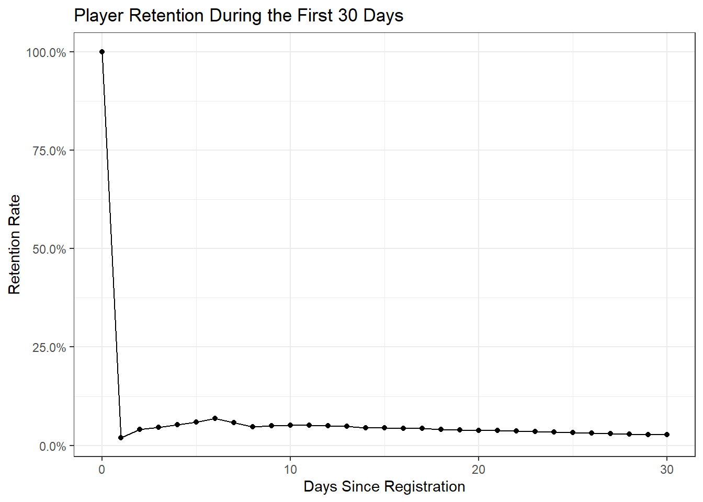
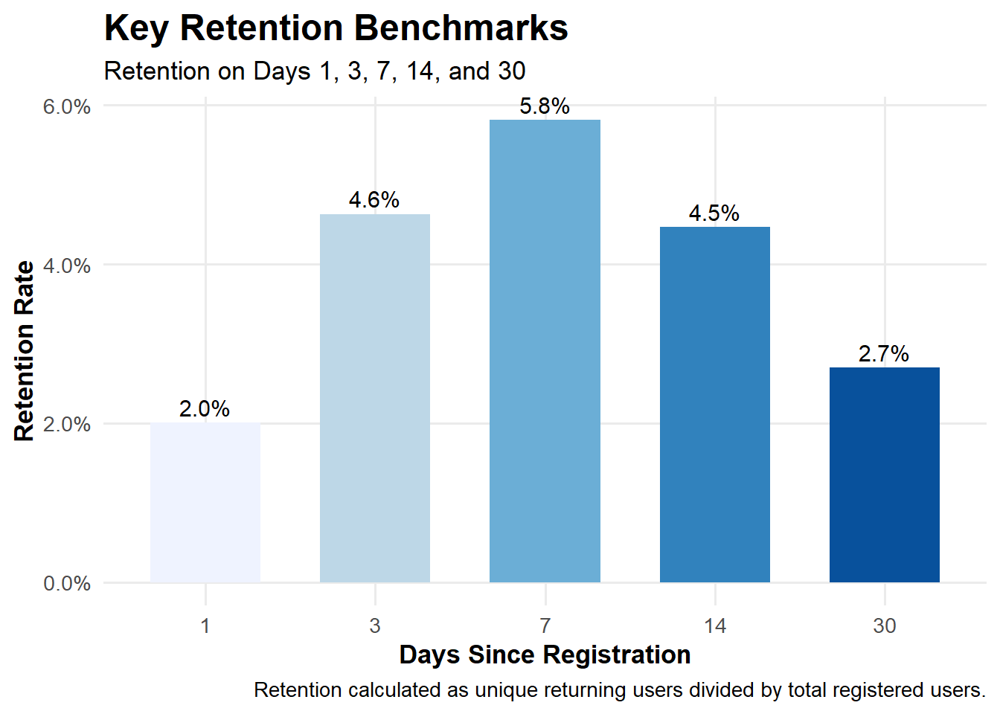
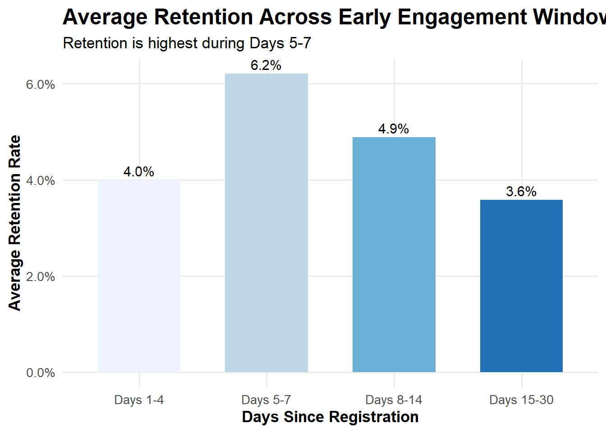

Portfolio 2: Gamelytics: Mobile Game Analytics Challenge 2
Goal: For the second portfolio, I am continuing the Gamelytics challenge from Kaggle. Here, according to the challenge, I will examine how often players return to the mobile game after registering by calculating daily retention rates from registration and login data. We have two datasets we are working with where ‘reg_data’ contains user registration timestamps, and ‘auth_data’ contains user login timestamps, both with the unique user IDs.
library(tidyverse)## ── Attaching core tidyverse packages ──────────────────────── tidyverse 2.0.0 ──
## ✔ dplyr 1.2.0 ✔ readr 2.2.0
## ✔ forcats 1.0.1 ✔ stringr 1.6.0
## ✔ ggplot2 4.0.3 ✔ tibble 3.3.1
## ✔ lubridate 1.9.5 ✔ tidyr 1.3.2
## ✔ purrr 1.2.1
## ── Conflicts ────────────────────────────────────────── tidyverse_conflicts() ──
## ✖ dplyr::filter() masks stats::filter()
## ✖ dplyr::lag() masks stats::lag()
## ℹ Use the conflicted package (<http://conflicted.r-lib.org/>) to force all conflicts to become errorslibrary(lubridate)
library(scales)##
## Attaching package: 'scales'
##
## The following object is masked from 'package:purrr':
##
## discard
##
## The following object is masked from 'package:readr':
##
## col_factorImport files
reg_data <- read_delim(
"data/reg_data.csv",
delim = ";",
escape_double = FALSE,
trim_ws = TRUE
)## Rows: 1000000 Columns: 2
## ── Column specification ────────────────────────────────────────────────────────
## Delimiter: ";"
## dbl (2): reg_ts, uid
##
## ℹ Use `spec()` to retrieve the full column specification for this data.
## ℹ Specify the column types or set `show_col_types = FALSE` to quiet this message.auth_data <- read_delim(
"data/auth_data.csv",
delim = ";",
escape_double = FALSE,
trim_ws = TRUE
)## Rows: 9601013 Columns: 2
## ── Column specification ────────────────────────────────────────────────────────
## Delimiter: ";"
## dbl (2): auth_ts, uid
##
## ℹ Use `spec()` to retrieve the full column specification for this data.
## ℹ Specify the column types or set `show_col_types = FALSE` to quiet this message.Check data first
glimpse(reg_data)## Rows: 1,000,000
## Columns: 2
## $ reg_ts <dbl> 911382223, 932683089, 947802447, 959523541, 969103313, 97720649…
## $ uid <dbl> 1, 2, 3, 4, 5, 6, 7, 8, 9, 10, 11, 12, 13, 14, 15, 16, 18, 19, …glimpse(auth_data)## Rows: 9,601,013
## Columns: 2
## $ auth_ts <dbl> 911382223, 932683089, 932921206, 933393015, 933875379, 9343726…
## $ uid <dbl> 1, 2, 2, 2, 2, 2, 2, 2, 2, 2, 2, 2, 2, 2, 2, 2, 2, 2, 2, 2, 2,…names(reg_data)## [1] "reg_ts" "uid"names(auth_data)## [1] "auth_ts" "uid"We need to convert the timestamps to dates first.
The dataset contains timestamps representing registration and login times in numeric format. These values are not directly interpretable, so they were converted into calendar dates. This step allows us to meaningfully calculate the number of days between registration and subsequent user activity.
library(lubridate)
reg_data <- reg_data %>%
mutate(reg_date = as.Date(as_datetime(reg_ts)))
auth_data <- auth_data %>%
mutate(auth_date = as.Date(as_datetime(auth_ts)))head(reg_data)## # A tibble: 6 × 3
## reg_ts uid reg_date
## <dbl> <dbl> <date>
## 1 911382223 1 1998-11-18
## 2 932683089 2 1999-07-22
## 3 947802447 3 2000-01-13
## 4 959523541 4 2000-05-28
## 5 969103313 5 2000-09-16
## 6 977206495 6 2000-12-19head(auth_data)## # A tibble: 6 × 3
## auth_ts uid auth_date
## <dbl> <dbl> <date>
## 1 911382223 1 1998-11-18
## 2 932683089 2 1999-07-22
## 3 932921206 2 1999-07-25
## 4 933393015 2 1999-07-31
## 5 933875379 2 1999-08-05
## 6 934372615 2 1999-08-11Join the datasets
login_data <- auth_data %>%
left_join(reg_data, by = "uid")First, I will calculate the days since registration
To measure retention, I will compute the number of days between each user’s registration date and their subsequent login events. This variable, “days since registration,” allows us to track user return behavior over time and identify when users are most likely to disengage.
login_data <- login_data %>%
mutate(days_since_registration = as.numeric(auth_date - reg_date))
head(login_data)## # A tibble: 6 × 6
## auth_ts uid auth_date reg_ts reg_date days_since_registration
## <dbl> <dbl> <date> <dbl> <date> <dbl>
## 1 911382223 1 1998-11-18 911382223 1998-11-18 0
## 2 932683089 2 1999-07-22 932683089 1999-07-22 0
## 3 932921206 2 1999-07-25 932683089 1999-07-22 3
## 4 933393015 2 1999-07-31 932683089 1999-07-22 9
## 5 933875379 2 1999-08-05 932683089 1999-07-22 14
## 6 934372615 2 1999-08-11 932683089 1999-07-22 20Now we will calculate the daily retention
total_users <- n_distinct(reg_data$uid)
retention <- login_data %>%
filter(days_since_registration >= 0) %>%
group_by(days_since_registration) %>%
summarise(
returning_users = n_distinct(uid)
) %>%
mutate(
retention_rate = returning_users / total_users
)
head(retention)## # A tibble: 6 × 3
## days_since_registration returning_users retention_rate
## <dbl> <int> <dbl>
## 1 0 1000000 1
## 2 1 20071 0.0201
## 3 2 40997 0.0410
## 4 3 46338 0.0463
## 5 4 52258 0.0523
## 6 5 59863 0.0599Because early user behavior is the most informative for product evaluation, I will narrow the focus of the analysis here on the first 30 days after registration.
retention_30 <- retention %>%
filter(days_since_registration <= 30)Let’s visulaize.
ggplot(retention_30,
aes(x = days_since_registration,
y = retention_rate)) +
geom_line() +
geom_point() +
scale_y_continuous(labels = scales::percent_format(accuracy = 0.1)) +
labs(
title = "Player Retention During the First 30 Days",
x = "Days Since Registration",
y = "Retention Rate"
) +
theme_bw()
This looks good, but Day 0 is making the graph hard to read because it is 100%. As expected, retention is highest on the day of registration (Day 0), where all users are active.
Now I will create a second plot that focuses on Days 1–30. This makes the early retention pattern easier to interpret and highlights how many users return after the first day, first week, and first month.
retention_1_30 <- retention_30 %>%
filter(days_since_registration > 0)
ggplot(retention_1_30,
aes(x = days_since_registration,
y = retention_rate)) +
geom_line(color = "#2C7FB8", linewidth = 1.2) +
geom_point(color = "#253494", size = 2.4) +
scale_y_continuous(labels = scales::percent_format(accuracy = 0.1)) +
scale_x_continuous(breaks = seq(1, 30, by = 2)) +
labs(
title = "Player Retention After Registration",
subtitle = "Daily retention from Day 1 to Day 30",
x = "Days Since Registration",
y = "Retention Rate",
caption = "Day 0 excluded because all users are active on registration day."
) +
theme_minimal(base_size = 13) +
theme(
plot.title = element_text(face = "bold", size = 18),
plot.subtitle = element_text(size = 12),
axis.title = element_text(face = "bold"),
panel.grid.minor = element_blank()
)
key_retention_days <- retention %>%
filter(days_since_registration %in% c(1, 7, 30))
key_retention_days## # A tibble: 3 × 3
## days_since_registration returning_users retention_rate
## <dbl> <int> <dbl>
## 1 1 20071 0.0201
## 2 7 58140 0.0581
## 3 30 26971 0.0270After excluding Day 0, retention shows an initial increase during the first week, peaking around Day 6 before gradually declining through Day 30. Day 1 retention was approximately 2.0%, Day 7 retention was approximately 5.8%, and Day 30 retention was approximately 2.7%.
This suggests that users may not return immediately after registration, but a subset becomes more active during the first week before engagement gradually drops off.
From a product perspective, the increase in retention during the first week suggests that users may be returning after some delay rather than immediately after registration.
This could reflect onboarding timing, early-game progression, scheduled rewards, or notification/event cycles. The decline after the first week suggests a potential opportunity to improve longer-term engagement.
Let me add a cleaner summary table.
retention_summary <- retention %>%
filter(days_since_registration %in% c(1, 3, 7, 14, 30)) %>%
mutate(
retention_percent = scales::percent(retention_rate, accuracy = 0.1)
)
retention_summary## # A tibble: 5 × 4
## days_since_registration returning_users retention_rate retention_percent
## <dbl> <int> <dbl> <chr>
## 1 1 20071 0.0201 2.0%
## 2 3 46338 0.0463 4.6%
## 3 7 58140 0.0581 5.8%
## 4 14 44726 0.0447 4.5%
## 5 30 26971 0.0270 2.7%Now, I will make a bar chart for key retention dates.
ggplot(retention_summary,
aes(x = factor(days_since_registration),
y = retention_rate,
fill = factor(days_since_registration))) +
geom_col(width = 0.65) +
geom_text(
aes(label = retention_percent),
vjust = -0.4,
size = 4
) +
scale_y_continuous(labels = scales::percent_format(accuracy = 0.1)) +
scale_fill_brewer(palette = "Blues") +
labs(
title = "Key Retention Benchmarks",
subtitle = "Retention on Days 1, 3, 7, 14, and 30",
x = "Days Since Registration",
y = "Retention Rate",
caption = "Retention calculated as unique returning users divided by total registered users."
) +
theme_minimal(base_size = 13) +
theme(
plot.title = element_text(face = "bold", size = 18),
axis.title = element_text(face = "bold"),
legend.position = "none",
panel.grid.minor = element_blank()
)
Peak Retention Analysis
The highest retention day was Day 6, with 6.8% retention.
peak_retention <- retention_1_30 %>%
filter(retention_rate == max(retention_rate))
peak_retention## # A tibble: 1 × 3
## days_since_registration returning_users retention_rate
## <dbl> <int> <dbl>
## 1 6 68194 0.0682Just to check whether this was an isolated spike or part of a broader pattern, I grouped Days 1–30 into four windows. This showed whether the Days 5–7 period had consistently higher retention than the surrounding periods.
retention_windows <- retention_1_30 %>%
mutate(
window = case_when(
days_since_registration %in% 1:4 ~ "Days 1-4",
days_since_registration %in% 5:7 ~ "Days 5-7",
days_since_registration %in% 8:14 ~ "Days 8-14",
days_since_registration %in% 15:30 ~ "Days 15-30"
)
) %>%
group_by(window) %>%
summarise(
average_retention = mean(retention_rate),
.groups = "drop"
)
retention_windows## # A tibble: 4 × 2
## window average_retention
## <chr> <dbl>
## 1 Days 1-4 0.0399
## 2 Days 15-30 0.0358
## 3 Days 5-7 0.0621
## 4 Days 8-14 0.0488Let’s reorder the table chronologically first.
retention_windows <- retention_windows %>%
mutate(
window = factor(
window,
levels = c("Days 1-4", "Days 5-7", "Days 8-14", "Days 15-30")
)
)Let’s visualize the bar chart once again.
ggplot(retention_windows,
aes(x = window,
y = average_retention,
fill = window)) +
geom_col(width = 0.65) +
geom_text(
aes(label = scales::percent(average_retention, accuracy = 0.1)),
vjust = -0.4,
size = 4
) +
scale_y_continuous(labels = scales::percent_format(accuracy = 0.1)) +
scale_fill_brewer(palette = "Blues") +
labs(
title = "Average Retention Across Early Engagement Windows",
subtitle = "Retention is highest during Days 5-7",
x = "Days Since Registration",
y = "Average Retention Rate"
) +
theme_minimal(base_size = 13) +
theme(
plot.title = element_text(face = "bold", size = 18),
axis.title = element_text(face = "bold"),
legend.position = "none",
panel.grid.minor = element_blank()
)
I grouped retention into early engagement windows. The Days 5-7 window had the highest average retention (6.2%), compared with Days 1-4 (4.0%), Days 8-14 (4.9%), and Days 15-30 (3.6%).
This supports the interpretation that users are most likely to return during the first week, especially around Day 6.